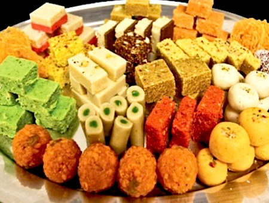
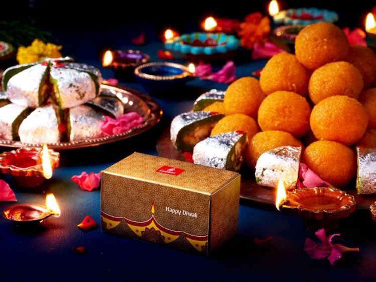
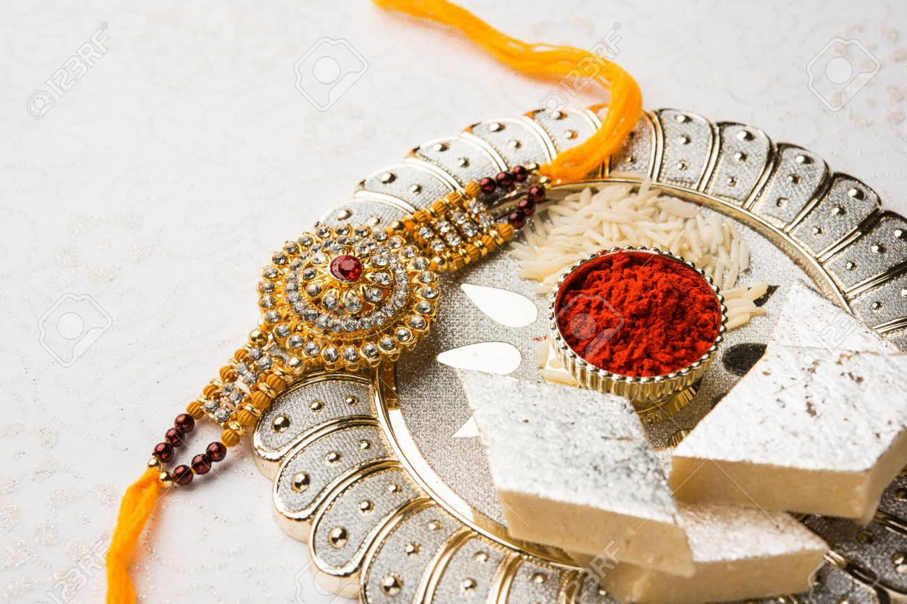
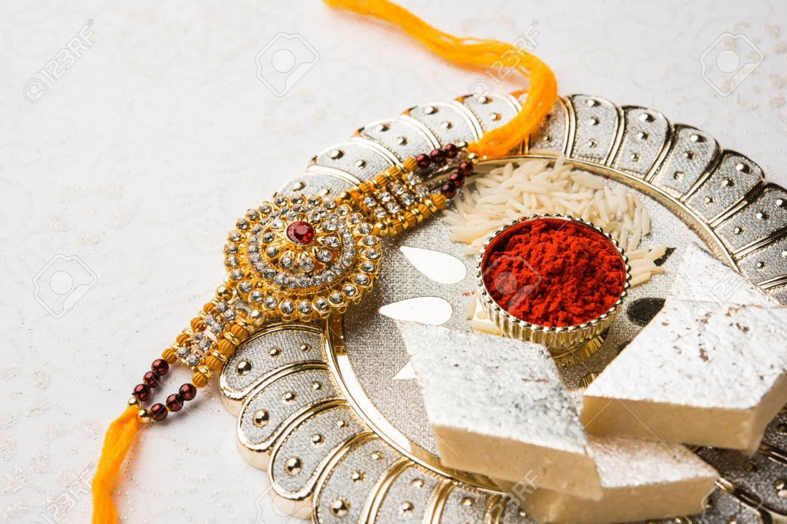

Festivals of India
This page will talk about the various festivals that have been mentioned on this site that take place across India. While there are plenty of them to talk about,
right now, we'll talk about two major festivals on India that are widely celebrated.
Diwali
Diwali, also known as the festival of lights, is a widely popular holiday throughout all of India. It is celebrated as the returning home of the Hindu God, Ram (Vishnu's Incarnation),
after his victory over the devil, Raavan, after Raavan kidnapped Ram's wife Sita (Lakshmi's Incarnation), and declared war on Ram. The main theme behind this festival is the victory
of good over evil. While there are many slight variations in how Diwali is celebrated, the main forms of celebration are the lighting of candles, the worship of
Lakshmi, creating Rangolis and the giving of gifts
Some Foods to Eat on Diwali:
Some foods to eat on Diwali would be: Kaju Katli, Samosas, Kachoris, even Laddoos. This festival is to celebrate a universal theme, and is an occasion of joy. This is one of the biggest festivals where all kinds of sweet dishes are eaten to celebrate the victory and return of good over evil.
 Raksha Bandhan
Rakshabandhan, also called Rakhi, is the festival that celebrates the bonds between a brother and sister (specifically), or any siblings at that.
During this festival, sisters tie a threaded bracelet,rakhi, to their brothers' wrists, symbolising that the brother's responsibility is to protect and take care
of the sister life long. This rakhi, not only symbolises the sister's wishing for their brother's protection, but also symbolizes their love and respect for their
sibling. It is festivals like this one, where sweets of all kind are made in order to celebrate a bond as strong as this.

All types of sweets, from Kaju Katlis, to Laddoos, to Kheer, to Rashmalai. All these sweets are eaten on the occasion of Rakshabandhan to celebrate a sibling's bond. Kaju Katli is more often used as part of the rituals to celebrate Rakshabandhan, where brother and sister feed it to each other to celebrate their bond.
 
